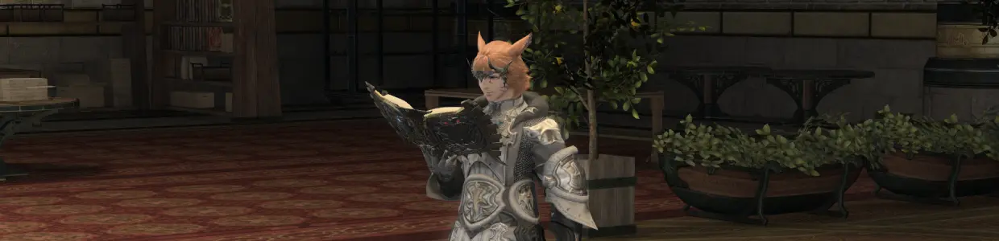

1. General Terms:
1.1 Failure to familiarize oneself with the regulations imposed by us does not absolve one of responsibility.
1.2 The Administration does not guarantee the continuous functioning of the server and its services, and is not responsible for any losses that may be incurred by customers due to circumstances such as the termination of server connectivity, malfunctions, software defects, and other undesired situations that may arise during consumption.
1.3 The Administration reserves the right to dispose of any virtual asset obtained on the server and in the game at its own discretion.
1.4 The sale or exchange of virtual assets, accounts, and virtual characters for real money or other tangible assets is strictly prohibited. Any players found engaging in such actions will have their user accounts revoked and permanently blocked.
1.5 The Administration reserves the right to terminate customer service without explanation.
1.6 The Administration will determine the punishment and duration of the penalty for any violations of the rules.
1.7 The Administration reserves the right to modify terms of use without prior notice.
1.8 The Administration reserves the right to modify, update, extend, or cancel its services at its discretion without prior notice to users.
1.9 The Administration is not responsible for restoring lost items or characters due to player negligence or naivety.
2. Characters and Accounts:
2.1 During registration, it is strictly prohibited to use obscene words or expressions and enter non-existent or someone else's electronic mail address. Any accounts created in violation of these rules will be deleted by the administration.
2.2 The account owner is fully responsible for all actions carried out by the consumer using the account.
2.3 The possession of an account is strictly limited to the account owner. The transfer of the account to another person is not allowed.
2.4 The account owner should keep the password confidential and not share it with anyone. The administration does not ask customers for their password as a rule.
2.5 Users are advised to exercise caution when clicking on unconfirmed or unreliable links and ensure their computer is adequately protected before leaving it.
2.6 It is important to periodically check the email used for registration and keep it active. Failure to do so may allow someone else to register using the same name and use it maliciously.
2.7 The server administration will only respond to emails sent from registered accounts.
3. Game Policy:
3.1 The use of prohibited programs that have even the slightest impact on the server's natural progress is strictly forbidden. Such cheat programs are prohibited, as they make it easier for players to gain advantages over others.
3.2 The use of bot programs that emulate the existence of players in the game is strictly prohibited.
3.3 It is strictly prohibited to make any changes to the client, such as entering or modifying servers, patch remakes or anything else that could impact our server.
3.4 The use of non-normative vocabulary in chat that insults, threats, extorts, blackmails, or humiliation to other players on the basis of their nationality, religion, or other personal characteristics is strictly prohibited. Misinformation, rumors about the server, administration, or other players are also prohibited.
3.5 Any form of fraud or manipulation, such as intentionally inputting errors to mislead the administration or creating characters with names similar to existing characters in the game or other related projects, is strictly prohibited.
3.6 Any form of attacking, challenging, intervening administration in their work is prohibited. Any reports related to such incidents must be filed with the administration through the appropriate channels.
3.7 Any action that delays the server's normal functioning is strictly prohibited.
3.8 It is strictly prohibited to make statements or appeals in the game that encourage players to leave server.
3.9 Any inaccuracies or bugs discovered on the server must not be used, takled about, or distributed publicly. Reports related to such incidents must be filed with the administration through the appropriate channels.
4. Sanctions:
4.1 Suspension of User Accounts or Toy Characters: The Administration reserves the right to temporarily or permanently suspend a user's account or character, at its discretion.
4.2 Prohibition on Exploiting Server Bugs or Using Prohibited Programs: Users are prohibited from exploiting server bugs, inaccuracies, or using prohibited programs to obtain virtual items or seize status. Such actions may result in suspension or termination of the account.
4.3 Cancellation and Deletion of Account and User Data: Users may request the cancellation and deletion of their account and user data. The Administration reserves the right to delete all registered accounts if necessary.
4.4 Prohibition on Access to Resources and IP Address Blocking: The Administration reserves the right to block access to its resources and block IP addresses of users who violate the rules.
4.5 Prohibition on Direct Computer Blocking: The Administration reserves the right to directly block access to its resources, regardless of the user's IP address, for violation of the rules.
4.6 Prohibition or Restriction frpm GMs/Administrators/Moderators: The Administration may prohibit or restrict accounts on individual basis, depending on the severity of the violation.
All donations made to the server are voluntary and non-refundable. By donating, you acknowledge that you are supporting the server's maintenance and development. Refunds will not be issued under any circumstances, including but not limited to account bans, technical issues, or dissatisfaction with in-game items or services. Please ensure you fully understand the terms before making any donation.
Users are welcome to make donations to support the server, but the Administration does not guarantee any solutions to user problems.
The Administration reserves the right to modify the rules at any time for any reason.
All information in the database is owned by the Administration.
By accessing the server and its services, users agree to abide by the written rules and conditions.